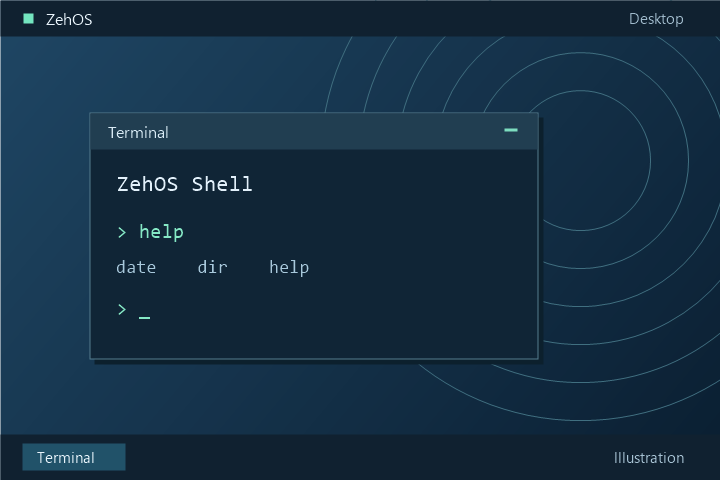

ZehOS ist ein in C# entwickeltes x64-Betriebssystem auf Basis von Cosmos Gen3. Es startet mit einem Desktop und bietet eine Textshell.

Grafische Arbeitsfläche mit Fenstern für Programme und Terminal.
Ein textbasierter Zugang zu Befehlen und Laufwerken.
QEMU und VMware sind die Zielplattformen für Gastläufe.